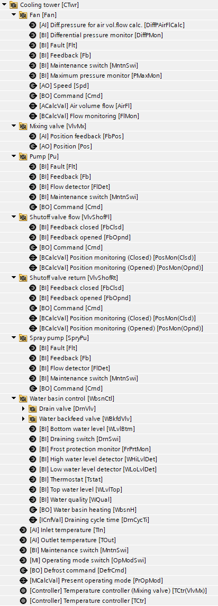
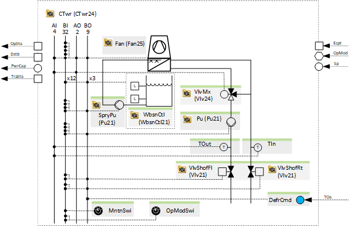
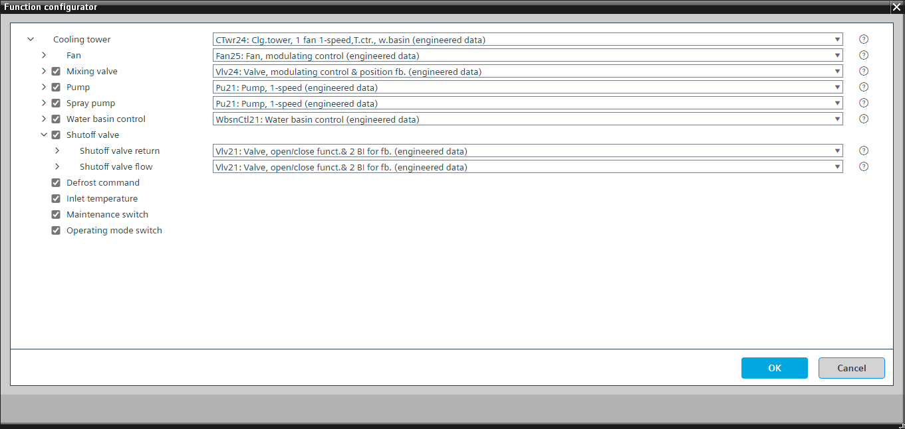

[CTwr24] Cooling tower, 1 fan 1-speed, temperature control, water basin
Program block, name / node subtype: [CTwr24] Cooling tower, 1 fan 1-speed, temperature control, water basin
Library hierarchy: Cooling and refrigeration equipment
Family: CGen
Project tree | Diagram |
|---|---|
 |  |
Configurator


Program blocks are stored in the library without I/Os. Use the auto-create and auto-connect functions to create I/Os and/or to connect them to the interface blocks, e.g., R_A, CMD_B. Alternatively, take the I/Os from the folder containing the predefined I/Os in the library and/or from the plant and connect them to the interface blocks.
Function
Controls a wet cooling tower with one variable speed fan and optional pump, mixing valve, shutoff valves, water basin and spray pump.
A PID controller compares the setpoint for cooling water (SpCw) with the outlet temperature and modulates the power of the cooling tower.
The program has settings for the nominal power of the cooling tower and for the transient state times (a signal that the cooling tower is in a transient state that blocks the logic for generating further step-up and step-down pulses for the power control and compensation) when switching on or off (e.g., 5 minutes when switching on and 2 minutes when switching off).
The switch-on and switch-off sequence for the valves, pump, and fan is defined in the function block CMDSEQ_B.
Optional functions
This program block has the following optional functions:
Option: Mixing valve (1xAO, 1xAI)
Controls the position of a mixing valve (Vlv24).
A PID controller changes the position of a mixing valve to maintain the cooling tower outlet temperature at a given setpoint.
The setpoint for the PID controller is slightly decreased.
Option: Pump (1xBO, 4xBI)
Controls a pump (Pu21). Different alternatives are possible, e.g., TwnPu21.
The pump runs when the cooling tower is running, and the optional shutoff valve is open.
Option: Shutoff valve (2xBO, 4xBI)
Controls flow and return side shutoff valves (2x Vlv21) that open when the recooling unit is running.
Option: Inlet temperature (1xAI)
Reads the signal from an inlet temperature.
Option: Operating mode switch (1xMI=2xBI)
Reads the state of an operating mode switch, normally at the front of the electrical panel, and has the states "Auto", "Off", and "On".
Option: Maintenance switch (1xBI)
Reads the signal from the maintenance switch and generates an alarm.
For maintenance, the outputs of the components are switched off with priority 5. If it is necessary to switch off the outputs of the pumps and the fans with priority 2, leave the "Maintenance switch" option in the pumps and the fans, delete the binary inputs and connect the maintenance switch from the recooling unit or cooling tower.
Option: Defrost command (1xBO)
Sends a defrost command when the outside air temperature falls below a certain setpoint, e.g., 0 °C. The defrost command causes the fan to rotate in the opposite direction. The defrost command is sent periodically (e.g., every 4 hours) for a specified time (e.g., 5 minutes).
Option: Water basin control (3xBO, 12xBI)
Controls the water basin.
Option: Spray pump (1xBO, 4xBI)
Controls a spray pump (Pu21). Different alternatives are possible, e.g., TwnPu21.
The pump runs when the cooling tower is operational, and the output of the outlet temperature controller is higher than an adjustable value e.g., 70%.
Mandatory elements
Name | Description | Type | Alarm / Notification class | Trend / Type | |
|---|---|---|---|---|---|
Fan | Fan | N/A | N/A | ||
TOut | Outlet temperature | AI: Analog input | No | Yes, 2 | |
TCtr | Temperature controller | Ctr: Controller | No | No | |
Optional elements
Name | Description | Type | Alarm / Notification class | Trend / Type | |
|---|---|---|---|---|---|
VlvMx | Mixing valve | N/A | N/A | ||
Further elements that belong to this element: TCtr(VlvMx) | Temperature controller (Mixing valve) | Ctr: Controller | |||||
TIn | Inlet temperature | AI: Analog input | No | Yes, 2 | |
Pu | Pump | N/A | N/A | ||
OpModSwi | Operating mode switch | MI: Multistate input | No | Yes, 4 | |
MntnSwi | Maintenance switch | BI: Binary input | Yes, 5 | No | |
DefrCmd | Defrost command | BO: Binary output | No | Yes, 4 | |
WbsnCtl | Water basin control | N/A | N/A | ||
SpryPu | Spray pump | N/A | N/A | ||
Further options
Description |
|---|
Shutoff valve Elements that belong to this option: VlvShofFl | Shutoff valve flow | [Vlv21] Valve, open/close function & 2 BI for feedback VlvShofRt | Shutoff valve return | [Vlv21] Valve, open/close function & 2 BI for feedback |